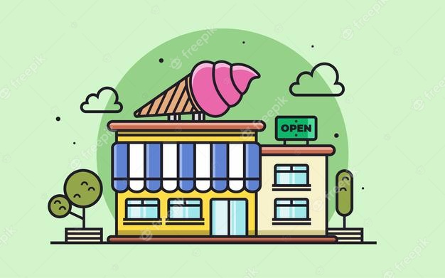

<!DOCTYPE html>
<html lang="pt-br">

<head>
    <meta charset="UTF-8">
    <title>AULA 19 - SELETORES</title>
    <!-- estamos chamando a biblioteca do jQuery para dentro do HTML, através de um arquivo externo. -->
    <script type="text/Javascript" src="aula19_jquery.js"></script>
    <!-- aqui chamamos a lib direto do site, sem precisar criar arquivo -->
    <!-- <script type="text/Javascript" src="https://ajax.googleapis.com/ajax/libs/jquery/3.6.0/jquery.min.js"></script> -->

    <!-- teste 2
        a função "mostraParagrafo()" mostra um parágrafo com "fadeIn" apresenta os elementos de forma esmaecentes dando opacidade, o "slow" apresenta este efeito de forma mais lenta. -->
    <!-- <script>
        function mostraParagrafo() {
            $("#paragrafo").fadeIn("slow");

        }
    </script> -->

    <script type="text/Javascript">
    // teste 3
    // "$" chama jQuery, o "document" carrega o documento na página e "ready" lê esse "document".
    // $(document).ready(function(){
    //     // "alert" vai abrir a caixa de mensagem com essa instrução no navegador.
    //     alert("Página Carregada com Sucesso!");
    // });

    
    // teste 4
    // "$" chama jQuery, o "document" carrega o documento na página e "ready" lê esse "document".
    // $(document).ready(function(){
    //     // "#botao" é o seletor, o ".click" é o onclick no botão e a função anônima "$" chama o alerta.
    //     $("#botao").click(function () {
    //         alert("Olá Mundo!");
    //     }); 
    // });


    // // EXERCÍCIO
    // $(document).ready(function(){
    //     // começo com o botão de irá exebir os parágrafos oculto, após clicar no primeiro botão é exibido um alerta e após dar ok é fechado o primeiro botão e o segundo botão aparece.
    //     $("#exibir").hide();
    //     $("#image").hide();
    //     $("#botao").click(function () {
    //         alert("Bem Vindo!");
    //         $("#botao").hide();
    //         $("#exibir").show();
    //         $("#image").show();
    //     });
    //     // após clicar no segundo botão, ele fica oculto e aparece os parágrafos e ao mesmo tempo reaparece o primeiro botão.
    //     $("#exibir").click(function () {
    //         $("#exibir").hide();
    //         $("#pS").fadeIn(2000);
    //         $("#pS").fadeOut(1000);
    //         $("#botao").fadeIn(4000);
    //         $("#image").hide();
    //     });
    // });


    // teste 5
    // criado uma função que chama o id "botao" com um click.
    // ao clicarm devido ao "p:first" a cor de fundo muda em função do css atribuído a esse seletor "p:first"
    $(document).ready(function () {
        $("#botao").click(function () {
            $("p:first").css("background-color", "red"); 
        });
    });

    </script>

    <style type="text/css">
        /* CSS DO EXERCICIO */
        /* * {
            padding: 20px;
            background-color: orchid;
        }

        input {
            font-size: 75px;
        }

        p {
            display: none;
            font-size: 50px;
        } */

        div {
            width: 200px;
            height: 100px;
            border: 1px solid #000;
            margin: 20px;
        }


    </style>
</head>

<body>
    <!-- teste 1 - chama o "input", com este tipo botão, chama o "onclick" que recebe a função.
    <input type="button" onclick="mostraParagrafo()" value="exibe paragrafo" />

    <h1>Olá jQuery</h1>

    <-- dentro do seletor chamo a classe para aplicar a função "escondido" 
    <p class="escondido">P1 Esta é uma página usando jQuery.</p>
    <p class="escondido">P2 Dá para fazer muitas coisas legais com jQuery.</p>
    <p class="escondido">P3 Então preste atenção!</p> -->


    <!-- teste 2
    <input type="button" onclick="mostraParagrafo()" value="exibe paragrafo" />

    <-- chama o seletor do tipo identificador e aplico estilo inline
    <p id="paragrafo" style= "display:none";>
        Parágrafo 1 de Exemplo. </br>
        Parágrafo 2 de Exemplo.
    </p> -->


    <!-- teste 3 -->
    <!-- somente estou chamando tags semânticas para mostrar no corpo do HTML -->
    <!-- <h1>Página de Demonstração 1!</h1>
    <h2>Página de Demonstração 2!</h2> -->


    <!-- teste 4 -->
    <!-- no "input" criei um botão com id "botao" para chamar a função. esse botão será criado na página e o "alert" só será apresentado após clicar no botão-->
    <!-- <input id="botao" type="button" value="Clique Aqui para Ver o Resultado" /> -->

    <!-- Exercicio -->

    <!-- <center>
        

        <input style="background-color: rgb(255, 225, 75); font-weight: bolder;" id="botao" type="button" value="Boas Vindas!" />

        <input style="background-color: royalblue; font-weight: bolder;" id="exibir" type="button"
            value="Veja Nossos Sabores" />

        <p id="pS">Chocolate </br>
            Morango </br>
            Flocos </br>
            Creme </br>
            Matcha.
        </p>
    </center> -->

    <!-- crio o botão com o "input" do tipo "button" com valor -->
    <input id="botao" type="text">


    <!-- <script>

        // // teste 1
        // // chamo ".hide" para esconder os parágrafos.
        // $(".escondido").hide();

        // //a função "mostraParagrafo()" mostra um parágrafo com "slideDown" que aplica efeito deslizante, o "slow" apresenta este efeito de forma mais lenta.
        // function mostraParagrafo(){
        //     $(".escondido").slideDown("slow");
        //     // o "slideToggle" faz o "slideDown" e "slideUp" juntos.
        //     $(".escondido").slideToggle("slow");
        // }

    </script> -->

</body>

</html>